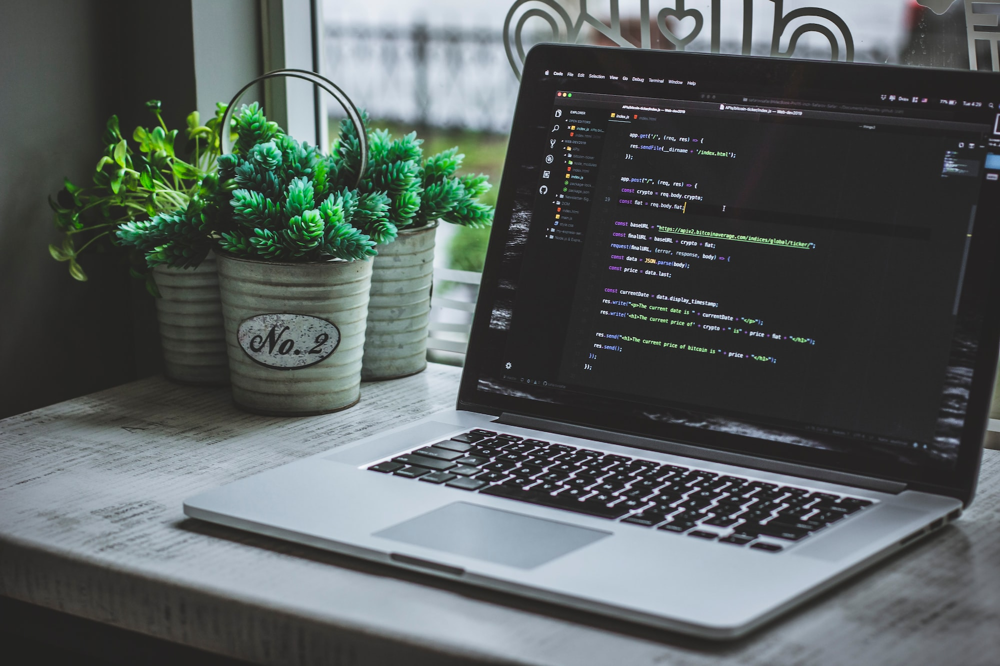

+351 915 784 287
+351 915 784 287 Rio Tinto/Porto - Portugal
Rio Tinto/Porto - PortugalSobre mim

Jornalista e mestranda em Ciências da Comunicação em Portugal, apaixonada por tecnologia e se descobrindo na área tech com grande entusiasmo, visando a transição de carreira para a área de desenvolvimento web.
Sou travelholic, defendo as causas da proteção animal, adoro cultura pop e Marvel. Meu sonho é ser nômade digital e trabalhar com algo que me desafia e me entusiasma todos os dias.
Sou uma mulher negra, periférica, que desde pequena foi ensinada a ver a educação como meio transformador de crescimento pessoal e profissional.
Educação
-
Empower Code for Woman by Zenvia - Alura Include (2022) Cursos de HTML, CSS, JavaScript. Certificados aqui.
-
Mestrado em Ciências da Comunicação - Faculdade de Letras da Universidade do Porto (2019-2023)
-
Graduação em Jornalismo com ênfase em Multimídia - Centro Universitário UNA (2012-2015)
-
Curso de Inglês - Wall Street English (Nível B1)
-
MBA em Jornalismo Digital - Universidade Estácio de Sá (2018-2019)
-
CorelDraw - SOS Educação Profissional (2017)
Experiências
Minha principal experiência na área de tecnologia tem sido como Customer Support da NOS, empresa de telecomunicações de Portugal, onde faço atendimento e resolução de avarias técnicas dos produtos de clientes. Recentemente fui promovida do atendimento técnico base para o atendimento técnico especializado, aprofundando os meus conhecimentos em redes e funcionamento de questões técnicas da empresa.
Tenho experiência em diversas áreas, principalmente na área de comunicação, onde atuei em assessorias de comunicação, agência de clipping, blogs, revista e jornal local. Fui também freelancer como designer gráfico. Como imigrante, trabalhei com housekeeping, em restaurante em várias posições e na indústria.
Habilidades